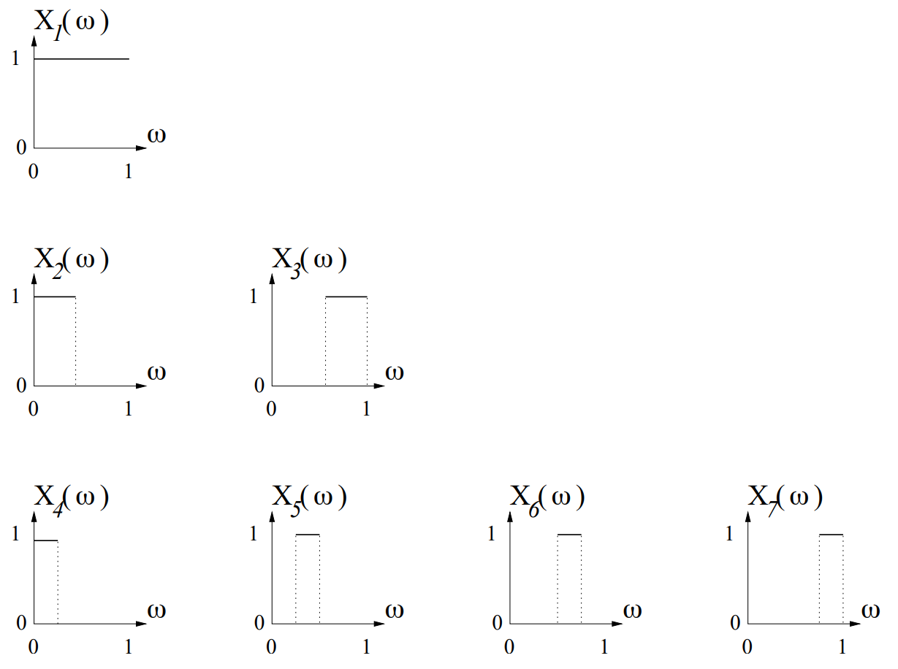

(Moving, shrinking rectangles) Let \((X_n : n \geq 1)\) be the sequence of random variables on the standard unit-interval probability space, as shown in the below Figure. The variable \(X_1\) is identically one. The variables \(X_2\) and \(X_3\) are one on intervals of length \(\frac{1}{2}\). The variables \(X_4, X_5, X_6\), and \(X_7\) are one on intervals of length \(\frac{1}{4}\). In general, each \(n \geq 1\) can be written as \(n = 2^k + j\) where \(k = \lfloor \log_2 n \rfloor\) and \(0 \leq j < 2^k\). The variable \(X_n\) is one on the length \(2^{-k}\) interval \((j 2^{-k}, (j+1) 2^{-k}]\). We want to show that the given sequence does not converge almost surely to the random variable \(X=0\).

Clearly, the sequence \(X_n(\omega)\) converges to \(X=0\) in probability. This can be verified directly using the definition of convergence in probability. Recall that
The sequence \(X_n\) converges in probability to \(X=0\) if for every \(\epsilon > 0\),
\(\lim_{n\rightarrow \infty} \mathbb{P}(|X_n-X|>0)=0\)
or \( \lim_{n\rightarrow \infty} \mathbb{P}(X_n>0)=\lim_{n\rightarrow \infty} \mathbb{P}(X_n=1)=0\)